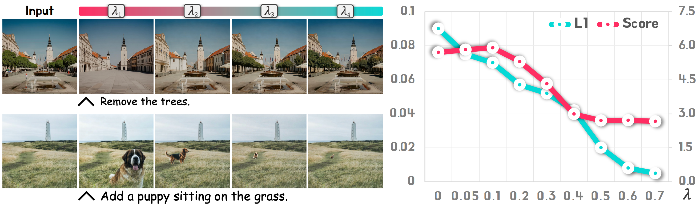

Figure 1: Overview of EditMGT and Crisp-2M. EditMGT, the first MGT-based model, performs editing in 2s with 960M parameters, 6× faster than models of comparable performance; Crisp-2M provides 2M high-resolution (≥1024) editing samples spanning 7 distinct categories.
Experimental Results
Quantitative Results
We evaluate EditMGT on four benchmarks: Emu Edit, MagicBrush, AnyBench, and GEdit-EN-full. Our model achieves state-of-the-art performance in image similarity while maintaining strong instruction adherence.
Key Results
- CLIP Image Similarity: SOTA on all benchmarks with 1.1% improvement on MagicBrush
- Style Transfer: 17.6% improvement over FluxKontext.dev
- Style Change: 3.6% improvement over second-best method
- Model Size: Only 960MB parameters vs. 2-8× larger baselines
- Speed: 6× faster editing compared to diffusion models

Figure 6: (a) AnyBench (local part) Results on DINOv2 scores. (b) AnyBench (global part and implicit part) Results on DINOv2 scores. (c) Ablation study on the dataset scale effects.
Attention Visualization
The relationship between edited images and threshold λ shows how our region-hold sampling effectively controls the extent of editing while preserving non-target regions.

Figure 7: Visualizations of editing results, GEdit Bench semantic scores, and L1 distances from original images across varying threshold λ. The relationship demonstrates how region-hold sampling controls editing extent.
Qualitative Comparisons
Visual comparisons demonstrate EditMGT's superior instruction comprehension, object attribute understanding, and structural preservation capabilities.

Figure 8: Qualitative comparisons between EditMGT and other open-source editing models. Our model demonstrates superior instruction comprehension and object attribute understanding.